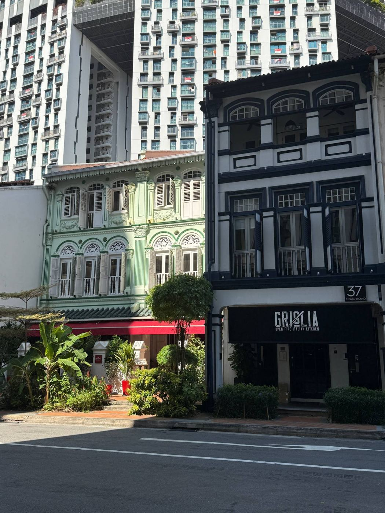
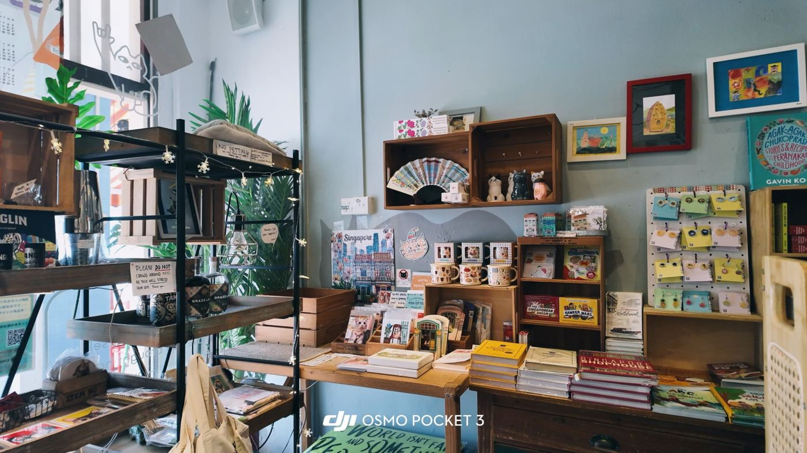
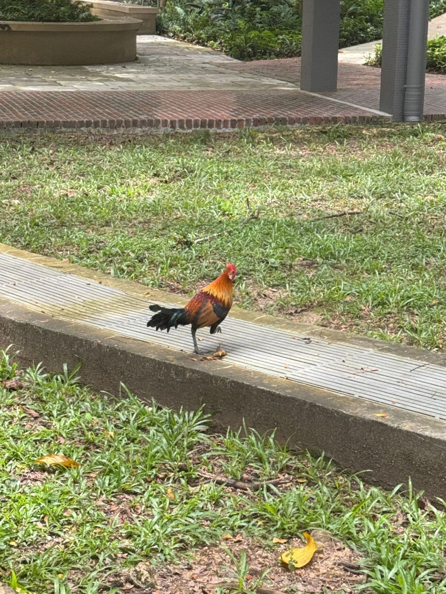
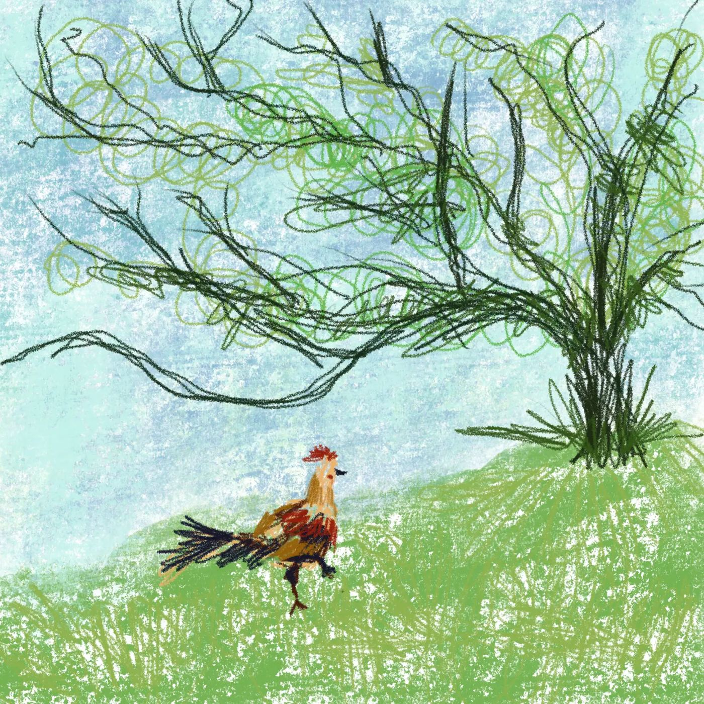
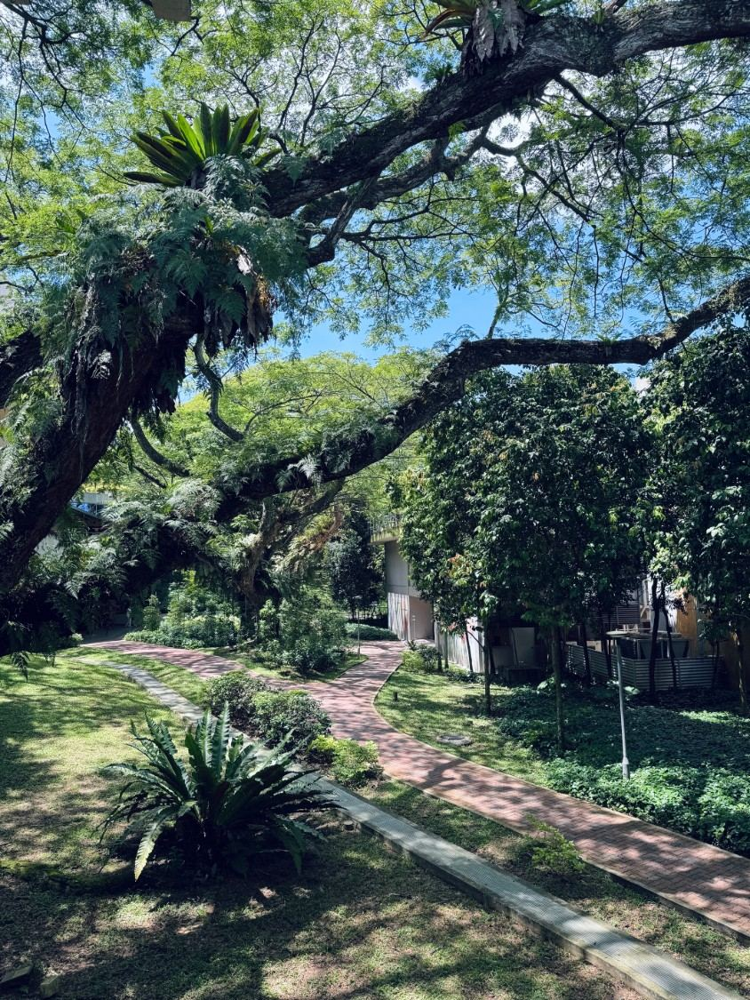
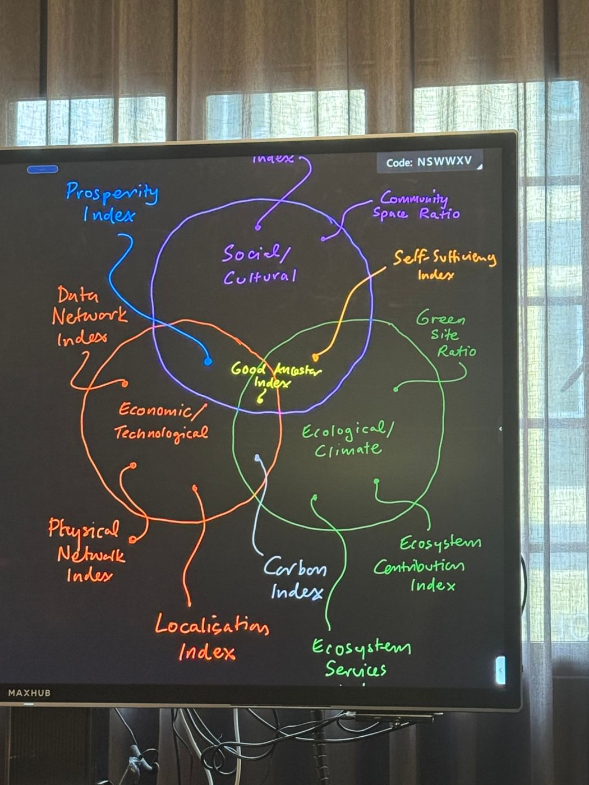

新加坡SINGAPORE · HOME BASE · NUS






新加坡是我在东南亚的家，也是我出发去槟城、清迈、吉隆坡的起点；走过关口，对岸就是马来西亚的新山。在这里，百年店屋就挨着高层组屋，小店里卖的是印着小贩中心和娘惹花砖的本地周边，校园草地上会有原鸡大摇大摆地走过。
我在 NUS 读综合可持续设计。课堂上讨论的不只是建筑本身，还有社会文化、经济技术和生态气候怎样一起衡量一个地方好不好；今年我也和同学一起改造了 Tanjong Pagar 的 International Plaza。
→ 给 CREATOR GROWTH 的启发
看完整项目 →
一个空间或社区失去活力，往往不是因为人少，而是因为它只为一种人、一种用途而设计。让更多人有事可做、有理由参与，比单纯拉流量更重要。